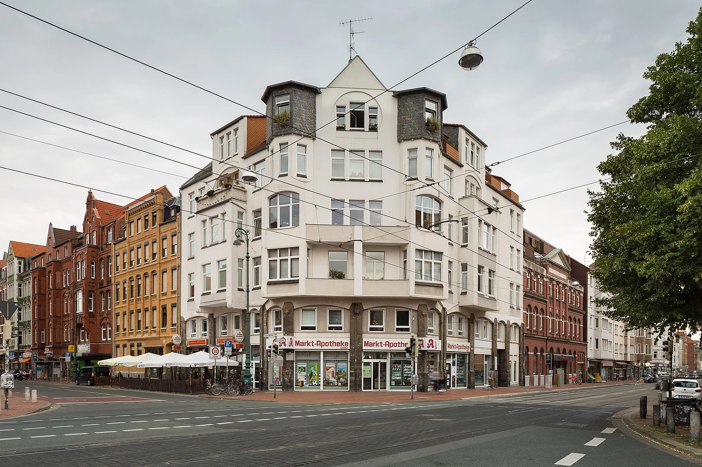

kropke Uhr (schwarz/weiss)
Heuschrecke makrobild
Fototour Technik – Industrielle Perspektiven in Hannover
Technik trifft Ästhetik: Diese Fototour führt dich zu spannenden technischen Schauplätzen in Hannover – von Industrieanlagen über Bahnhofsarchitektur bis zu moderner Infrastruktur. Im Fokus stehen Formen, Strukturen und Details, die sonst oft übersehen werden. Ideal für alle, die sich für technische Motive, Urban Photography oder Industrial Design interessieren. Ort: Hannover Termine: Wöchentlich, sonntags Dauer: ca. 3–4 Stunden Das erwartet dich: Technisch geprägte Fotospots: Alte Werksgelände, Brücken, Gleisanlagen, futuristische Fassaden oder Energieanlagen – je nach Termin und Zugangslage. Grafische Motive und Strukturen: Linien, Kontraste, Materialien – du lernst, wie man Technik in Szene setzt und mit Perspektiven spielt. Stadt und Technik im Wechselspiel: Auch der urbane Raum rund um technische Orte wird Teil deiner fotografischen Entdeckung. Erfahrener Guide an deiner Seite: Mit Ideen, Beispielen und technischen Tipps – von Bildkomposition bis Belichtung. Offen für alle Erfahrungslevel: Ob mit Smartphone, Systemkamera oder DSLR – willkommen ist jede*r mit Freude an Technik und Fotografie. Hinweis: Die genauen Tourstationen variieren wöchentlich. Informationen zum Treffpunkt erhältst du bei der Anmeldung.
Unser Treffen
Zoom


kropke Uhr (schwarz/weiss)
Heuschrecke makrobild
Fototour Technik – Industrielle Perspektiven in Hannover
Technik trifft Ästhetik:
Diese Fototour führt dich zu spannenden technischen Schauplätzen in Hannover
von Industrieanlagen über Bahnhofsarchitektur bis zu moderner Infrastruktur.
Im Fokus stehen Formen, Strukturen und Details, die sonst oft übersehen werden.
Ideal für alle, die sich für technische Motive, Urban Photography oder Industrial Design interessieren.
Ort: Hannover
Termine: Wöchentlich – sonntags
Dauer: ca. 3–4 Stunden
Das erwartet dich:
Technisch geprägte Fotospots:
Alte Werksgelände, Brücken, Gleisanlagen, futuristische Fassaden oder Energieanlagen
je nach Termin und Zugangslage.
Grafische Motive und Strukturen:
Linien, Kontraste, Materialien. Du lernst, wie man Technik in Szene setzt und mit Perspektiven spielt.
Stadt und Technik im Wechselspiel:
Auch der urbane Raum rund um technische Orte wird Teil deiner fotografischen Entdeckung.
Erfahrener Guide an deiner Seite:
Mit Ideen, Beispielen und technischen Tipps, von Bildkomposition bis Belichtung.
Offen für alle Erfahrungslevel:
Ob mit Smartphone, Systemkamera oder DSLR – willkommen ist jede*r mit Freude an Technik und Fotografie.
Hinweis: Die genauen Tourstationen variieren wöchentlich. Informationen zum Treffpunkt erhältst du bei der Anmeldung.
Unser Treffen
Zoom